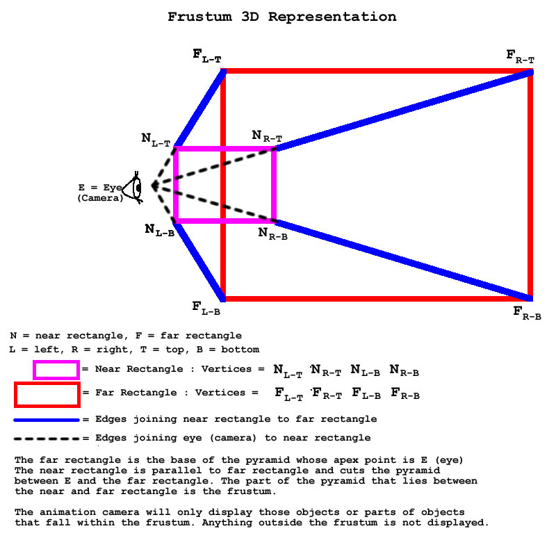

An Object Oriented Approach to AnimationBy Yatin S. ShelkeIntroduction to Object Oriented AnimationIn the past 20 years, the video game industry which has seen rapid growth from simple 2D monochromatic games to full blown high resolution, full color and fast 3D games that are so popular today, and even modern films are full of computer-generated images. At the same time, object-oriented programming has made it easier to conquer the complexity involved in creating high quality computer animation. Creating an animation can be conveniently thought of as drawing objects currently in view on the computer screen. For example, a monster in the game DOOM is an object instance of the class for that kind of monster. Simply put, an Object Oriented Animation application defines various classes, creates the instances of these classes and performs operations on the object instances. Below, we'll explain some of the essential abstractions that you can use to create your own computer animations. This article assumes that you have basic familiarity with the principles of object-oriented programming in C++. If you don't know C++, first check the C++ Made Easy tutorial, especially the sections on classes and inheritance. Graphic Object abstractionThe most basic abstraction in animation is that of a Graphical Object, which we'll represent here as class GraphicObject. Anything that is drawn on the screen as a unit is a Graphic Object. A point, a line, a polygon, a Bezier curve, a Bezier surface, a polygon with a texture map, a background, a flat image, a sprite a 3D shape made of polygons are all examples of Graphic Objects. (Don't worry if you don't know what something like a Bezier curve or a sprite is—Bezier curves and surfaces are just special curves and surfaces that have mathematical properties that make them easy to work with in animation, and a sprite is just a simple 2D image—your mouse pointer on the screen is an example of a sprite). Simple graphic objects can be combined into more complex graphic objects. The most basic problem that an animation engine must solve is to be able to draw these objects on the screen. In procedural (non-objected oriented) programming, there may be nothing in common between the functions to draw a cube and a sphere. But in object oriented programming, we want to be able to have a generic solution for drawing objects. We can think of "drawing" a graphical object as an action that someone (the caller) can perform on an entity (the callee) i.e. the Graphic object. The caller should not have to care about the details of how the drawing is done, as long as the Graphic Object makes the action available to the caller. So the class GraphicObject which should have a method on it to draw the object, i.e. GraphicObject::draw(). Concrete graphic objects like cubes, spheres, lines, curves, surfaces etc. can all inherit from class GraphicObject and implement the method GraphicObject::draw(). Designing a draw() function this way is not only good style, but has some very important implications for animation engine design. An engine that deals only with the abstract class GraphicObject will NOT have to be changed on introduction of new types of Graphic Objects. As an analogy, a hypothetical automobile engine may be designed to be able to take in gasoline, ethanol, natural gas, or perhaps even vegetable oil! As long as the combustion unit design is isolated from other parts of the engine, such that it interfaces with the rest of the engine through a piston that can drive other parts, it does not matter how the combustion unit is built or what type of fuel it uses. To the driver of the automobile, the engine must simply have an external interface, i.e. the ignition system. The driver simply needs to insert the ignition key and turn it to start the engine. The GraphicObject abstraction in the case of an animation engine is like the combustion unit, and the method GraphicObject::draw() is like turning on the ignition. Thus, the method GraphicObject::draw() is the essential method for to all Graphic Objects. Without this method, the object cannot be made visible on the screen. By making the GraphicObject::draw() an abstract method, we get a complete separation of interface and implementation, so that the animation application can call this method on each Graphic Object in a generic manner, yet each Graphic Object can be drawn in its own unique way. To further extend the scope of GraphicObject, we can include camera movements as drawing operations. Thus in addition to objects that the user can see, the GraphicObject abstraction could include implementations of the animation engine camera—we'll talk more about this later. The Graphic Object abstraction has properties and methods that may or may not be implemented by all Graphic Object classes. Most Graphic Objects have the property of "position", which the method GraphicObject::draw() can use as a reference point for drawing the object. The position is like an anchor point for the graphic object. GraphicObject::draw needs to know how to draw the object with reference to that position. When the graphics engine moves the graphic object, the GraphicObject::draw() method needs to recalculate the location of all parts of the graphic object and draw them at their new location, thus redrawing the graphic object as a whole. The advantage of the position property in GraphicObject is that the engine simply sets a new position on the graphic object, and the graphic object redraws the rest of itself in the new location. Without the position property, the engine would have to relocate individual parts of the graphic object, thus binding the engine design to the details of its graphic objects. Not all user visible graphic objects need a position property. An example is a graphic object representing the background. The drawing of the background is not tied to any position because it is just drawn on the entire screen. On the other hand, there may be graphic objects that are not user visible, but do need a position. An example of such a graphic object is the animation camera, as it does need a position to compute the view of the rest of the visible objects. Graphic Objects with the position property may also have operations on them to perform rigid body movements, such as GraphicObject::reposition(), GraphicObject::displace(), or GraphicObject::rotate(). A "rigid body movement," by the way, is just a mathematical term for a movement where all the points in the object stay in the same places relative to each other after the movement—for example, if you pick up a book and put it on the bookshelf, the cover and all the pages are still in the same places relative to each other afterwards, even though the book has moved. An "elastic body movement" on the other hand is when the points move in relationship to each other—for example, after you inflate a helium balloon, the points on the balloon are much further from each other than before. Elastic body movements could include GraphicObject::scale(), or GraphicObject::shear(). These rigid and elastic movements could potentially be made part of the abstract Graphic Object interface, as they apply in a generic manner to a large variety of Graphic Objects. Note that these methods are not intended to draw the graphic object. These methods affect the target object so as to make the method GraphicObject::draw() draw the object with the desired transformation applied.
On the other hand, "plastic body" movements—operations that change the shape of the object in potentially arbitrary ways—probably shouldn't be a method on the abstract Graphic Object. A good example of performing plastic operations on graphic objects is in the game SPORE, which allows the player to reshape a creature's body through plastic deformations. The problem with plastic body movements is that the function interface required for that operation depends greatly on the specifics of the Graphic Object. To achieve plastic transformations of a graphic object, the graphic object must be modified using a more specific interface, independent of the animation engine. For example, event handling code in an animation game may map certain events to operations on instances of graphic objects. These operations would be specific to the type of the graphic object and the application and could perform the plastic transformations on the graphic object using methods that are not available on the GraphicObject itself. In fact, the animation engine will not even know about these happenings, but will simply call GraphicObject::draw(), which will draw the object with the new plastic deformation. Given that there will be properties of a Graphic Object that are unique to its implementation, we need a GraphicObject::refresh() method that could get called internally from methods like GraphicObject::displace(), GraphicObject::rotate(), GraphicObject::shear() or GraphicObject::scale() to perform calculations common to all these methods. For example, take a flashlight Graphic Object (class FlashLight) being rotated around an axis. The FlashLight::rotate() method should do just the geometric transform, e.g. changing the direction vector property of the flashlight. It shouldn't need to worry about the direction of the light source—instead, it can call the FlashLight::refresh() method which will change the position of the flashlight's light source based on the new direction of the torchlight. The refresh method saves other methods the trouble of recalculating changes in non-geometric properties that result from a geometric operation. Here's a possible interface for the Graphic Object based on what we've looked at so far:
class GraphicObject {
protected:
virtual void refresh() = 0;
public:
virtual void draw() = 0;
virtual void reposition(Vector position) = 0;
virtual void displace(Vector position) = 0;
virtual void rotate(Vector axis, double angle) = 0;
virtual void scale(double proportion) = 0;
virtual void linear_shear(Vector axis, Vector shear_displacement) = 0;
virtual void planar_shear(
Vector axis1, Vector axis2, Vector shear_displacement) = 0;
};
class PositionalGraphicObject : public virtual GraphicObject {
protected:
Vector position;
public:
Vector get_position();
void set_position(Vector p);
};
Composite Graphic Object AbstractionNot all graphics objects need to be based on pixels. Simple Graphic Objects can be used to create a Composite Graphic Object. For example, a cube could have a list of 6 Face Graphic Objects as a field to define the surface of the cube. This greatly simplifies operations like rotating the cube around an axis. As long as the Face Graphic Object has the rotate method implemented, the Cube Graphic Object simply has to call that method on each of the Face objects in its list and the Cube will rotate as desired. Using a generic Graphic Object greatly simplifies the composition and implementation of more complex Graphic Objects. Imagine a creature in a game like SPORE—it will be composed of simpler objects representing the head, torso, arms and legs, which in turn would be composed of polygons or Bezier surfaces. To make the creature rotate, the abstract rotate operation with identical parameters needs to be called on its head, torso, arms and legs, which would in turn do the same on their list of polygons or Bezier surfaces. The complex creature object is able to delegate much of the work to simpler objects, rather than having to compute everything itself. Here's pseudocode showing a possible declaration of a composite graphic object:
class CompositeGraphicObject {
protected:
List
Camera AbstractionThe Camera is an essential abstraction for an animation engine. The camera maps objects in an animation to the rectangular animation display window. The camera determines what parts of the animation are visible on the screen based on its location and other parameters. Intuitively, a simple animation camera is a hypothetical lens that has the ability to clearly focus any number of objects, located at arbitrary distances in its field of view, to a single rectangular screen. Most video game animation engines use this kind of simple camera abstraction. This kind of camera is different from a camera lens or the human eye, which focus on only part of a scene (as determined by the focal length). 3D animated movies like Ratatouille or Cars, unlike games, need a camera similar to the human eye in order to shift focus between near and far objects. For 3D perspective view animations (most contemporary video games), the Camera is defined by its position and orientation in the animation (virtual) world. When a 3D Cartesian coordinate system is used, the camera is defined by 3 vectors - position, direction of view, and upward orientation vector. Imagine yourself in the center of a room with your head oriented straight up and looking straight. Your position in the room, the direction you are facing and the orientation of your head is analogous to the camera's position, direction of view, and upward orientation vector. Moving around the room is like changing the position of the animation camera. Turning your head in different directions - left, right, up, down, turning around etc. is like changing the direction of view and upward orientation vector. To understand why a separate view direction and upward orientation vector are needed, imagine tilting your head to your left (without turning your neck). The direction of view remains same in this case, but the upward orientation is changed. Similarly turning your head to the left without tilting it causes the direction of view to change, but not the upward orientation. There is a one-to-one mapping from the triplet {position, direction-of-view, upward-orientation} to the contents of the field of view. In a 3D game, the player's viewpoint moves around the virtual world when the animation engine moves and orients the animation camera. Although the camera is not drawn as an object on the screen, it is nonetheless a worthy candidate to inherit from class GraphicObject. Its implementation of GraphicObject::draw() will position and orient the camera in the virtual world, allowing the rest of the visible objects to be drawn correctly onto the screen. Here's psuedocode that demonstrates a possible definition of class Camera:
class Camera : public virtual GraphicObject {
. . . other protected members . . .
Vector position;
Vector direction;
Vector up;
public:
. . . other public members . . .
};
Frustum AbstractionThe frustum is a concept closely related to the camera. It defines the clipping planes for the field of view. It is of the shape of a square pyramid, except part of the top of the pyramid is cut off. To understand the frustum better, imagine yourself looking at a small rectangle in front of you, with a much larger rectangle behind this small rectangle, such that the sides of the rectangles are parallel to each other. If your eye were the apex of a pyramid with the larger rectangle as its base, then the frustum is the part of this pyramid between the small rectangle and the big rectangle. If the small rectangle represents the video screen as a window into the animation world, then you can only see things inside the frustum on the screen; anything outside it is simply out of your field of view. The clipping planes of the frustum are the planes that contain the faces of the frustum. Diagram 1 gives a 3D representation of the frustum. The camera defines all possible points in space that can be mapped to the screen. The frustum defines all the points that actually do get mapped to the screen. The process of using the frustum to define these points is known as frustum culling. The camera is located exactly at the apex of the pyramid described above, and its direction of view is the vector from the tip of the pyramix to the center of the base and perpendicular to the near and far rectangles. The camera's upward orientation is parallel to one of the sides of the rectangle. You can see the camera in Diagram 1.  Diagram 1: Frustum 3D RepresentationThe dimensions of the frustum are usually set only once at the beginning of the animation application. However, it is one of the inputs given to the animation engine, and therefore should be abstracted to keep the engine platform/library independent. A possible definition of class Frustum is given in pseudo code.
class Frustum {
private:
double near; // z coordinate of near rectangle with respect to camera
double far; // z coordinate of far rectangle with respect to camera
double right; // x coordinate of right side of near rectangle with respect to camera
double left; // x coordinate of left side of near rectangle with respect to camera
double top; // y coordinate of top side of near rectangle with respect to camera
double bottom; //y coordinate of bottom side of near rectangle with respect to camera
};
Animation Object AbstractionAn animation application needs to do more than just drawing Graphic Objects. It needs to animate them, which means changing the Graphic Object in discrete steps. The structure of most animations is a loop of two steps. The first step is to make all the computations needed for drawing a single frame of the animation. The second step is to draw the frame by updating the video memory of the display device. These two steps repeat until the animation stops. This is essentially the same as the way a movie is displayed in a theater. The movie projector closes its shutter and rolls a frame of the film in front of the light source (step 1), then opens the shutter to let the light of the frame image out to screen through the lens (step 2). This sequence repeats itself as nearly 48 times in a second which gives the viewer the illusion of a continuous movie experience. A simple abstraction for an animation is to have a class with a single method on it that simply does the computation for loading the image of the frame to be displayed next. Although it would be tempting to call this method draw(), a more appropriate name would be get_next_frame(). If the film projector above were implemented in software, it would have one animation object whose method AnimationObject::get_next_frame() would load the image from the Image Graphic Object into that part of the application's memory that gets copied to the video memory of the display device. As another example, the abstract class "MovieClip" used in ActionScript (a programming language used to creating Flash applications) is a generic Animation Object abstraction. An animation application may not want to draw just one Image Graphic Object in each frame. Instead, it would identify various Animation Objects and put them together in each frame. For example, the monsters in the game DOOM each map to an Animation Object. The AnimationObject::get_next_frame() for each of the monster's Animation Objects performs actions on the Graphic Object associated with the monster. These operations might include repositioning, displacing, rotating, scaling, or even smiling and growling! The DOOM game application creates the monsters and the DOOM animation engine goes through the list of all monsters, calling AnimationObject::get_next_frame() on each of them, thus giving the user the illusion that they are all moving, turning, attacking or growling. Let us consider why we need the Animation Object. If you see an animated movie such as Disney's Cars, you can't help but notice that every object in the movie is animated individually. The animation engine that renders each frame must manipulate several objects at once for each frame of the movie. The animation engine that creates the movie is asking each of the objects to draw themselves in each frame. For each frame that GraphicObject::draw() is called on an object, the object will get drawn, potentially differently. Even though it is easy to relate to the abstraction of Graphic Object in a single frame, it is a little more difficult to grasp that the Graphic Object is actually extended over a range of frames of the movie. The extension of the Graphic Object across a range of frames is precisely the abstraction of "Animation Object". To understand this is to take a giant leap into the world of animation! If you ever get lost in the design of your animation/game engine, simply read this paragraph again to return to home base. Now we can derive some essential properties of an Animation Object. One of the properties of the Animation Object is a Graphic Object or (a list of Graphic Objects) that it needs to draw across its range of frames. Because the exact Graphic Objects depends on the nature of the Animation Object, each Animation Object subclass will define its own member variables to hold onto the Graphics Objects it needs. To perform the animation, the Animation Object needs to call GraphicObject::draw() on each of its Graphics Object members during the AnimationObject::get_next_frame() method. There is one property that can be considered to be valid for all Animation Objects. The idea that there is a range of frames across which the Graphic Object will be displayed suggests that the range of frames is an essential property of an Animation Object. For simplicity, the animation object's first frame can be 0, while its last frame would be equal to (nframes - 1), where nframes is the total number of frames that the animation persists. The range will be depicted as {0, nframes - 1}. This range of frames is used not by the animation engine, but by the method AnimationObject::get_next_frame(), or by a module other than the animation engine (like an event handler module) to extend or shrink the range. To understand the range of frames better, let's look at an example of an Animation Object: a moving cube that begins moving at frame X and stops at frame Y. This cube is an example of an animation object with a range of frames { 0 , (Y - X - 1) }. For now let's assume that something manages the animation object's placement in the animation engine, so that the cube animation is seen on the screen only for the range of frames specified. When the cube animation object is created, its frame number would be 0. When this object is given to the animation engine, the engine simply calls AnimationObject::get_next_frame() on it. This method sees that the frame number is 0, draws the cube in its initial position, and increments the frame number. The engine then comes back and calls AnimationObject::get_next_frame() the second time. Since the current frame counter has changed to 1 (frame 2), this method draws the cube in its next position. And so on till the last frame is reached. Thus the cube gets animated by the engine over its range of frames. This is illustrated in pseudocode below, wherein the X position of the cube gets changed over its range of frames.
FrameState CubeAnimationObject::get_next_frame()
{
if (current_frame displace( Vector( 0, deltaX ) ;
}
. . .
cube->draw();
. . .
}
It is very common to find animation objects in movies/animations/games that repeat an animation effect continuously, such as for a continuously rotating object, or even a continuously repeating scene. On the other hand, some animations stop after the last frame is displayed. In video games, there are other ways an animation can play out, for example, on pressing a key, a blinking object stops blinking—a continuously repeating animation that gets stopped in its tracks. In some cases an animation can play in reverse. For example, in the game DOOM, when monsters are killed, their bodies disintegrate into pieces that collect in a pile at the place the monster was killed. Sometimes, these monsters get revived. In this case, the animation of the disintegration of the monster's body is played back exactly in reverse sequence. The above examples illustrate the need for more abstract operations on the Animation Object. The abstract operations on an Animation Object can be summarized as follows:
One issue that must be addressed is how the animation engine determines which of the above calls must be made next. For example, after a call to AnimationObject::get_next_frame(), it is possible that for a repeating animation, the last frame was reached, and the next call must be AnimationObject::rewind(). However, if this was not the last frame, then AnimationObject::get_next_frame() must be called next. One obvious, but bad, solution is that the animation engine keeps track of the frame number for each of its animation objects and somehow knows what to do for each frame of each animation object. This would completely break the abstract relation between animation engine and animation object! A much better alternative is for the animation object to track of its frames because it knows best what to do for the next frame. In this case, the animation object must return information to the engine about what to do next. One way to do this is to return an enumerated value to represent instructions to the animation engine. The enumeration FrameState is described in pseudocode below along with a possible declaration of the abstract class AnimationObject.
enum FrameState {
// tells the caller of the AnimationObject method what to do after the call
PLAY_NEXT_FRAME, // play next frame (start play or resume paused)
PLAY_PREVISOUS_FRAME, // play the previous frame
STOP, // stop playing the animation object
PAUSE, // pause playing the animation object
REPEAT // rewind the animation object
};
class AnimationObject {
protected:
List
A real example of an animation engine that implements these operations is a DVD player. This animation engine has one currently playing Animation Object (the scene or chapter being played), that contains one Graphic Object per frame of the animation, i.e. the image of the scene to be displayed on the screen for that frame. Subsequent calls to AnimationObject::get_next_frame() on the Animation Object load the next frame's Graphic Object and call the method GraphicObject::draw() on it. These Animation Object operations are performed on the DVD player by pressing keys on the DVD remote control. When you press the PLAY button on the remote control, you are really asking the DVD player's animation engine to call AnimationObject::get_next_frame() continuously. When you press the PAUSE or STOP button, you are really calling AnimationObject::pause(). The STOP button additionally stops the animation engine completely. This additional stop step is not an operation on the Animation Object, rather, it is an operation on the animation engine itself. The PLAY button also maps to AnimationObject::resume(), asking the player to continue calling AnimationObject::get_next_frame() from where it was paused. The STEP BACK button is calling AnimationObject::rewind() to rewind to the frame of the Animation Object i.e. the scene being played. The STEP FORWARD button is really asking the animation engine to replace the current Animation Object by the Animation Object for the next scene and start calling AnimationEngine::get_next_frame() on the new current Animation Object. The REWIND button is asking the player's animation engine to make calls to AnimationObject::get_previous_frame() at different frequencies (1x, 2x, 4x and so on). Similarly the FFWD button is asking the engine to make calls to AnimationObject::get_next_frame() at those different frequencies. Whenever you are wondering about interface of the Animation Object abstraction, think of your DVD player and its remote control! As another example, the animation camera can also be animated, and this animation can be implemented via a Camera Animation Object. To animate the camera, an Animation Object will not have a drawable (visible) kind of Graphic Object to manipulate, instead, it will have to manipulate the camera triplet {position, direction, up}. Note that all such Animation Objects need to manipulate exactly one global camera, as one animation can have only one camera. (I honestly don't know how a spider manages to see with 8 eyes, but if the animation engine were a spider, it would have to do with just one eye. Further, I would certainly not want to teach animation to a spider.) Article 2 will how Animation Objects are contained in Layers. Although the discussion so far implicitly assumes that the animation engine calls the methods of AnimationObject directly, a better design is to have the Animation Object contained in a "Layer", and its methods to be called via the Layer container object. Article 3 will discuss how layers, layer folders and animation objects are used in an animation engine. It will also discuss how to break up an animation into layers for more modularity. SummaryA Graphic Object is an abstraction for anything that contributes to the content of a single frame of animation. A Graphic Object can be visible on the screen, such as objects on the screen, or it is something invisible, but that affects the rest of the objects that are visible, such as a Camera Graphic Object. Most Graphic Objects require a "position" property, while some do not need a "position" such as the background Graphic Object. An Animation Object is an abstraction for the extension of a Graphic Object across a range of frames. An Animation Object contains one or more Graphic Objects. The animation application can consist of one or more Animation Objects. The method AnimationObject::get_next_frame() performs computations necessary to get its list of Graphic Objects drawn to the display. Other methods on the Animation Object cause it to pause, resume, rewind or reverse. An animation application or game implementation can become very complex simply due to the large number of Graphic and Animation Objects involved, even ignoring all the game logic and drawing and interaction of each piece of the animation/game, making an object oriented approach useful for managing the complexity. The next article discusses how the concepts of Frames, Layers and Layer Folders help organize of the multitude of things that need to be drawn and animated in your game. Continue to Part 2: Frames, Layers and Layer Folders |